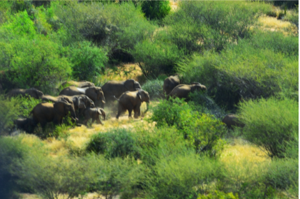
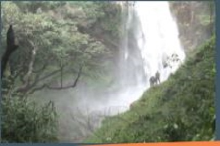

KARIBU SANA WEST POKOT.
TOURIST ATTRACTIONS
-

Nasolot Game ReserveNasolot National reserve was established in 1979 in west Pokot County. It has 9200 hectares of magnificent rugged, ocky land.The reserve is endowed with lots of Flora and Fauna ranging from the largest herds of the African Elephant estimated at 300 per herd during the recent collaring.
These Elephants often migrate along Rimoi game reserves in Elgeiyo-Marakwet, South Turkana national reserve using the Masol corridor. Pellow and Masol community conservancies boarder the Reserve.
The reserve also boasts of buffaloes, lesser kudus, bushbucks, duikers, lions, leopards, dik-diks, spotted hyenas, jackals, impalas, olive baboons, sykes and vervet monkeys, beisa and fringe –eared Oryx, water bucks, Thompson's gazelle and hippos.
Most of this wildlife numbers have declined due to subsistence poaching, and human wildlife conflict. The County Government in coordination with the Kenya wildlife service has embarked on restocking of the Reserve. -
 The Crocodiles of TippetHuman beings are always fascinated with the Idea of nature, survival and distinctiveness. Have you ever imagined coming live with most of the wonders that you see on television and the films that you see on natural geography? The hills and the seasonal dams of Tippet is the right place to match your quest.
The Crocodiles of TippetHuman beings are always fascinated with the Idea of nature, survival and distinctiveness. Have you ever imagined coming live with most of the wonders that you see on television and the films that you see on natural geography? The hills and the seasonal dams of Tippet is the right place to match your quest.
Tippet is located in the hills at the furthest corner of West Pokot county; a captivating off-road drive of about four hours to the south. The vicinity is serenely cocktailed with hills, Valleys, plains and a seasonal dam that houses thousands of beautifully dangerous crocodiles and different species of birds.
For any tourist who loves to document an adventurous story to tell thereafter, watching the different species of the reptiles of Tippet bask on the banks of the dam all day long with their jaws wide open and sometimes crawling to and from the dam with their wide bellies and their rough backs is breath-taking.
Sometimes one can be lucky to find crocodile eggs on the foots of the hills or meet “hatchlings” being transferred back to the river by their mother.Tourist activities to be introduced at Tippet include; Crocodile cruising, rock climbing and camping.
There is also a privilege for the tourist to interact with one of the indigenous Pokot culture practiced by the people of Tippet. These include, dance and song, rites of passage, and traditional Pokot delicacies. -

Tartar WaterfallsSituated in tartar village in Mnagei Ward west pokot Sub County, approximately 6km from Makutano, tartar waterfall gives a magnificent view of the beautiful Pokot land.
Almost like a stage surrounded by trees. There are 2 waterfalls slightly separated, but all next to each other in a row. It's so lovely, warm, and fresh that you stand behind the waterfall.
It takes away anxieties and knots of tension. The waterfall overlooks Lokurnoi, the hilly Cheptuya and the unexplored nature of Riwo. The hills and the beautiful valley that stretch from Tartar falls to meet Kopoch hills favours paragliding and hiking. -
 Turkwel DamThe Turkwel Hydroelectric Power Station, also Turkwel Dam, is an arch dam on the Turkwel River about 76 km (47 mi) north of Kapenguria in West Pokot, Kenya. The dam serves several purposes to include hydroelectric power production, irrigation, tourism and fisheries. It was constructed between 1986 and 1991 by the spie batignolles [French company]. It supports the third largest hydroelectric power plant in the country, having an installed electric capacity of 106 megawatts (142,000 hp).
Turkwel DamThe Turkwel Hydroelectric Power Station, also Turkwel Dam, is an arch dam on the Turkwel River about 76 km (47 mi) north of Kapenguria in West Pokot, Kenya. The dam serves several purposes to include hydroelectric power production, irrigation, tourism and fisheries. It was constructed between 1986 and 1991 by the spie batignolles [French company]. It supports the third largest hydroelectric power plant in the country, having an installed electric capacity of 106 megawatts (142,000 hp).
Turkwel river which feeds the dam begins from the lush green slopes of Mount Elgon and traverses north Pokot as River suam to the Gorge later channeled through the turbines then released to flow down the Turkana plains joining River Weiwei at Nakwamoru on the Turkana side then empties into the world largest desert lake, Lake Turkana; also known as the JADE SEA. -
 Mount KoghCenturies ago, setting out to climb a mountain would have been considered close to insanity. Mountains were places of peril, not beauty, an upper world to be shunned, not sought out. Why do mountains mesmerize us now, drawing us into their territory, often at the cost of our lives? Mountain is a cinematic and musical ambiance.
Mount KoghCenturies ago, setting out to climb a mountain would have been considered close to insanity. Mountains were places of peril, not beauty, an upper world to be shunned, not sought out. Why do mountains mesmerize us now, drawing us into their territory, often at the cost of our lives? Mountain is a cinematic and musical ambiance.
Mount Kogh, a name with a lot of resonance befitting 2608 m, is steep, with almost erecting rock rising for 300m from a northerly branch of the Cheranganis. A visit to this place and you will leave with a respect for the Mother Nature. The pure size, the mountain range and the clear skies seen from above.
It is mountain, trail ride drive through Chesta Guest House, Chemurlokotio road. But there are more trails to follow and more days to enjoy here. Snakes of different species are also found here such as Black mamba, forest cobra and rock python among others. The area is ideal for; paragliding, mountain climbing and bird watching

Mt.Mtelo
Situated high above the Great Rift Valley in the semi-arid areas of West Pokot County, Mt. Mtelo stands tall at 3336m. It is fifth tallest in Kenya.It is one of the few mountains in West Pokot that the Pokot attach a huge spiritual meaning to it.
The Pokots believe that their god(Tororot) resides here.Spiritual rituals used to, and are still performed facing this mountain. You can access the mountain through Marich- Mbara road, off Kitale-Lodwar highway.
For those who love mountain climbing, hiking, bird watching, camping, mountain biking, studying the unique flora and fauna and experiencing the indigenous Pokot. culture this is your ideal place.
The Pokots believe that their god(Tororot) resides here.Spiritual rituals used to, and are still performed facing this mountain. You can access the mountain through Marich- Mbara road, off Kitale-Lodwar highway.
For those who love mountain climbing, hiking, bird watching, camping, mountain biking, studying the unique flora and fauna and experiencing the indigenous Pokot. culture this is your ideal place.